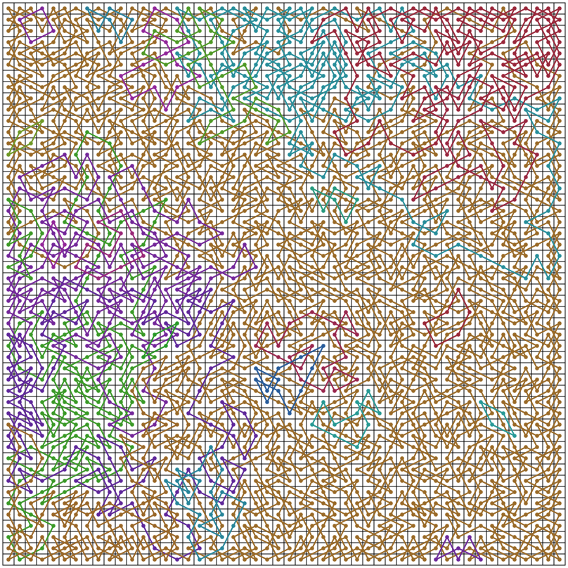
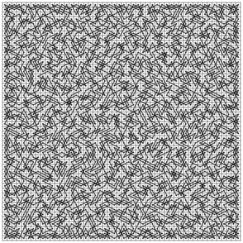

Ian Parberry,
"Tourneys and the Fast Generation and Obfuscation of Closed Knight's Tours",
arXiv:2001.06044 [cs.DM], 2020.
Abstract
New algorithms for generating closed knight's tours
are obtained by generating a vertex-disjoint cycle cover of the knight's graph and joining the resulting cycles. It is shown experimentally that these algorithms are significantly faster in practice than previous methods. A fast obfuscation algorithm for closed knight's tours that obscures obvious artifacts created by their method of generation is also given, along
with visual and statistical evidence of its efficacy.
The cross-platform open-source
tourney generator available from the github link below contains an implementation of the
algorithms described in the paper. It will generate closed knight's tours and tourneys
in SVG (Scalable Vector Graphics) format which can be viewed in a browser,
reproduce the reported move and relative move frequency statistics, and
measure run time requirements. The latter will, of course vary from the ones
reported in the paper depending on the computational
power of the computer on which it is executed.
For instructions on how to compile, run, and grok the code,
read the Doxygen-generated documentation.
The move distribution and CPU time data reported in the paper,
together with supplementary data, is available as a
250KB zip file.
This includes the data as a series of text files output by the tourney generator described in the
previous section and a pair of Microsoft Excel files containing the same data together with the corresponding graphs of CPU time and move distribution.
The cycles in the tourneys below are colored pseudo-randomly.

Knight's tours generated by Warnsdorf's algorithm can be recognized by
the regions of parallel moves created by Warnsdorf's heuristic, which causes
the knight to prefer to stay close to where it has been before. This can be seen quite clearly in the image below.
In contrast, Takefuji and Lee's neural network generates knight's tours that appear more locally random.

Obfuscating a Warnsdorf tour minimizes the visual artifacts introduced by Warnsdorf's heuristic.
Previously, the only computationally feasible way to construct a
large knight's tour was to generate one that is highly structured
using, for example, divide-and conquer
(such as this 200x200 example: image,
move table).
The obfuscation algorithm described in this paper allows us to generate
large knight's tours of sizes much larger than is computationally
feasible using Warnsdorf's algorithm or the Takefuji-Lee algorithm.
The images can be examined in more detail using your browser's zoom function.
Very large knight's tours are provided as zip files for convenience.
-
$100 \times 100$ joined Warnsdorf tourney.
(image,
move table)
-
$200 \times 200$ knight's tour from obfuscating a concentric braided tourney.
(image,
move table)
-
$1000 \times 1000$ knight's tour from obfuscating a concentric braided tourney.
(10MB zip file)
-
$2000 \times 2000$ knight's tour from obfuscating divide-and-conquer tour.
(40MB zip file)
There are potentially many more types of braided tourney than the concentric braided tourney described in the paper. Here are some examples.
Colors are used to indicate the four cycles that comprise each braid.
Striped braided tourney.
Comb braided tourney.
{kind=link}
{kind=link}
{kind=link}